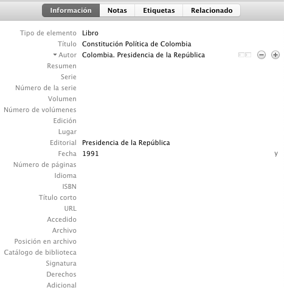

Anexo E — Citas y referencias de material legal (leyes, decretos, sentencias, etc.
Uno de los aspectos que más puede causar confusión en Normas APA es lo referente a la citación de material legal y jurídico; de hecho, la misma American Psychological Association refiere al uso del manual internacional “Bluebook: A Uniform System of Citation” (este estilo está incluido en Zotero y otros gestores bibliográficos), pues estos dos estilos difieren en su formato de cita y referencia, pues las publicaciones legales citan las referencias al pie de página, en tanto que en el estilo APA se ubican todas las fuentes bibliográficas, incluyendo aquellas de materiales legales, en la lista de referencias. Si deseas conocer y adaptar los lineamientos del Bluebook, puedes consultarlos en https://www.legalbluebook.com/; asimismo, algunos ejemplos del manual de la APA están basados en el sistema jurídico estadounidense, lo que sin duda podría causar cierto conflicto con el entorno legal colombiano; ambos serán aceptados en los trabajos de grado y tesis de la Universidad de Antioquia.
Sin embargo, para facilitar y adaptar las citas y referencias al sistema legal y jurídico colombiano, recomendamos los siguientes lineamientos basados en Normas APA como primera alternativa de citación y referenciación de los materiales más comunes en Colombia, a saber, leyes, decretos, sentencias, resoluciones, códigos, constitución política, entre otros. La primera recomendación está basada en el prefijo Colombia. como autor corporativo estatal, luego la subentidad y el año. En Zotero esto se puede lograr insertando la referencia como Libro:

| Cita (al interior del texto) | Referencias |
|---|---|
| (Colombia. Presidencia de la República, 1991) | Colombia. Presidencia de la República. (1991). Constitución Política de Colombia. Presidencia de la República. |
| (Colombia. Congreso de la República, 1994) | Colombia. Congreso de la República. (1994). Ley 133 de 1994 (mayo 23): por la cual se desarrolla el Decreto de Libertad Religiosa y de Cultos, reconocido en el artículo 19 de la Constitución Política. Diario Oficial. |
| (Colombia. Presidencia de la República, 1998) | Colombia. Presidencia de la República. (1998). Decreto 1504 de 1998: por el cual se Reglamenta el Manejo del Espacio Público en los Planes de Ordenamiento Territorial. Diario Oficial. |
| (Colombia. Congreso de la República, 2014) | Colombia. Congreso de la República. (2014). Ley 1733 de 2014: Ley Consuelo Devis Saavedra, mediante la cual se regulan los servicios de cuidados paliativos para el manejo integral de pacientes con enfermedades terminales, crónicas, degenerativas e irreversibles en cualquier fase de la enfermedad de alto impacto en la calidad de vida. Diario Oficial. |
| (Colombia. Corte Constitucional, 2003a) | Colombia. Corte Constitucional. (2003a). Sentencia SU.805 de 2003: vía de hecho en proceso de lanzamiento por ocupacion de hecho / debido proceso de querellados - vulneración por actuaciones arbitrarias. M. P. Jaime Córdoba Triviño. Corte Constitucional. |
| (Colombia. Corte Constitucional, 2003b) | Colombia. Corte Constitucional. (2003b). Sentencia T-361 de 2003: acción de tutela instaurada por Elkis Patricia Jiménez Castro contra la Universidad Cooperativa de Colombia – Seccional Santa Marta. M. P. Manuel José Cepeda Espinosa. Corte Constitucional. |
| (Colombia. Corte Constitucional, 2006) | Colombia. Corte Constitucional. (2006). Sentencia T-264 de 2006: acción de tutela instaurada por Fanny Stella Lesmes Galarza, en representación de su menor hijo Paul Andrés Rodríguez Lesmes contra la Universidad de los Andes. M. P. Jaime Araújo Rentería. Corte Constitucional. |
| (Colombia. Ministerio de Salud y Protección Social, 2012) | Colombia. Ministerio de Salud y Protección Social. (2012). Resolución 4331 de 2012 (diciembre 19): por medio de la cual se adiciona y modifica parcialmente la Resolución 3047 de 2008 modificada por la resolución 416 de 2009. Diario Oficial. |
| (Colombia. Ministerio de Hacienda y Crédito Público. Superintendencia Financiera, 2006) | Colombia. Ministerio de Hacienda y Crédito Público. Superintendencia Financiera. (2006). Circular Externa 048 de 2006 (diciembre 22). Superfinanciera. |
| (Colombia. Ministerio de Minas y Energía, 2010) | Colombia. Ministerio de Minas y Energía. (2010). Reglamento técnico de iluminación y alumbrado público. Ministerio de Minas y Energía. |
| (Colombia. Ministerio de Ambiente, Vivienda y Desarrollo Territorial, 2007) | Colombia. Ministerio de Ambiente, Vivienda y Desarrollo Territorial. (2007). Decreto 3600 de 2007: por el cual se Reglamentan las Disposiciones de las Leyes 99 de 1993 y 388 de 1997 Relativas a las Determinantes de Ordenamiento del Suelo Rural y al Desarrollo de Actuaciones Urbanísticas de Parcelación y Edificación en este tipo de suelo y se adoptan otras disposiciones. Diario Oficial. |
| (Colombia. Ministerio de Comunicaciones, 2001) | Colombia. Ministerio de Comunicaciones. (2001). Resolución 000797 de 2001 (junio 8): por la cual se atribuyen unas bandas de frecuencias radioeléctricas para su libre utilización dentro del territorio nacional. Diario Oficial. |
| (Colombia. Ministerio de Educación Nacional, 2006) | Colombia. Ministerio de Educación Nacional. (2006). Plan Decenal de Educación 2006-2016: Pacto Social por la Educación. Ministerio de Educación Nacional. |
| (Colombia. Congreso de la República, 2010) | Colombia. Congreso de la República. (2010). Código penal y de procedimiento penal anotado. Leyer. |
| (Colombia. Congreso de la República, 2006) | Colombia. Congreso de la República. (2006). Ley 1098 de 2006 (noviembre 8): por la cual se expide el Código de la Infancia y la Adolescencia en Colombia. Diario Oficial. |
| (Colombia. Contraloría General de la Nación, 2003) | Colombia. Contraloría General de la Nación. (2003). La deserción escolar en la educación básica media. Contraloría General de la Nación. |
| (Colombia. Unidad Nacional para la Gestión del Riesgo de Desastres, 2012) | Colombia. Unidad Nacional para la Gestión del Riesgo de Desastres. (2012). Guía para la formulación del Plan Municipal de Gestión del Riesgo de Desastres. Sistema Nacional de Gestión del Riesgo de Desastres. |
| (Colombia. Departamento Administrativo Nacional de Estadística, 2011) | Colombia. Departamento Administrativo Nacional de Estadística. (2011). Encuesta de convivencia escolar y circunstancias que la afectan - ECECA, para estudiantes de 5o a 11o de Bogotá. DANE. |
| (Colombia. Departamento Administrativo de Ciencia, Tecnología e Innovación, 2015) | Colombia. Departamento Administrativo de Ciencia Tecnología e Innovación. (2015). Resultados finales de la Convocatoria Nacional para el Reconocimiento y Medición de Grupos de Investigación, Desarrollo Tecnológico o de Innovación y para el Reconocimiento de Investigadores del SNCTeI. Colciencias. |
| (Colombia. Procuraduría General de la Nación, 2012) | Colombia. Procuraduría General de la Nación. (2012). Financiamiento del Sistema General de Seguridad Social en Salud: seguimiento y control preventivo a las políticas públicas. Procuraduría General de la Nación. |
| (España. Ministerio de Trabajo y Asuntos Sociales. Instituto Nacional de Seguridad e Higiene en el Trabajo, 1996) | España. Ministerio de Trabajo y Asuntos Sociales. Instituto Nacional de Seguridad e Higiene en el Trabajo. (1996). Evaluación de riesgos laborales. INSHT. |